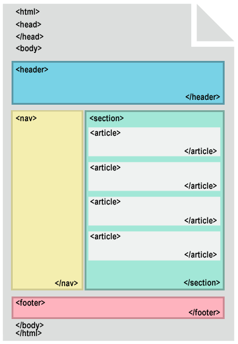
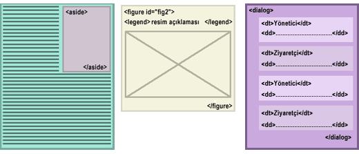

11 Ağust'ta yazdığım haberler içerisinde yer alan "HTML5'in yeni elementleri" adlı makaleyi okudum ve konuyu biraz araştırdım. Bu makaleyi baz alarak yeni elementler hakkında genel bir özet çıkardım. Güzel elementler eklenmiş. Neyse yazıya geçelim.
Html'in yeni versiyon çalışmaları sürüyor. Şimdiye kadar bazı elementler ve özellikler üzerinde mutabakat sağlanmış durumda. HTML5'in yeni özellikleri hakkında burada kısa bilgi vererek yenilikler hakkında bilgi edineceğiz.
Yapısal Elementler
Web sitelerini kodlarken belli yapısal kısımlara ayırırız. Üst kısım, içerik kısmı, sol-sağ kolonlar, menü alanı, alt kısım ve içerik alanı. HTML5 geliştiricileride bunları düşünmüşler ve bu alanların her biri için bir element tanımlamışlar. Biz şu an kodlama yaparken bu alanlar için genel <div> elementini kullanmaktayız, yeni elementlerle bu tekil element(<div>) yerine her kısım için bir element kullanma imkanımız olacak. Bu web sayfalarını kodlarken bize bir çok avantaj sağlayacaktır. CSS kodlması açısındanda Buelementlere biraz göz atalım.
section: Kitabın bir bölümü, bölümün bir kısmı veya gerçekte HTML
sayfamızın herhangi bir kısmını tanımlamak için kullanabiliriz.
header: Web sayfamızın üst kısım olarak belirlediğimiz kısımı
tanımlamak için kullanabiliriz. <head> ile karıştırmayalım.
footer: Web sitemizde alt kısım olarak belirlediğimiz kısımı
tanımlamak için kullanabiliriz.
nav: Diğer sayfalara link verilen kısımlar, menü oluşturduğumuz
kısımları tanımlamak için kullanabiliriz.
article: Günlüğümüzdeki(blog) bir konu, ansiklopedideki bir bölümü
tanımlamak için kullanabiliriz.

Anlamlı Blok Elementler
Yapısal elementlerden daha çok ayrıntıya inen elementlerde bulunmaktadır. Kısacabu yeni elementleri incelersek:
aside: İçerik ile ilişkili ayrıntılar, notlar vb alanlar için
içeriğin yanına iliştirilmiş alanları tanımlamak için kullanabiliriz.
figure: Genelde kullandığımız şekil ve açıklaması için eklenmiş
güzel element. Hem şekil hemde açıklmasını içeren bir element
dialog: Bu element ismindende anlaşıldığı gibi diyalog, karşıklık
sohbet içeren sayfaları daha kolay kodlamamız için eklenmiştir. Bu
element <dd> ve <dt> elementlerini alt element olarak kullanır.

Anlamlı Satıriçin Elementler
Html4'de bilgisayar kodlaması için satıriçin element olarak 5 kod var var, code, kbd, tt, samp. Html5 bunlara bir kaç tane dahaeklemiş.
m(marked): m elementi işaretlenmiş metin olarak tanımlanabilir.
Anahtar kelime tabanlı çalışan ara motorları için biçilmiş kaftan olarak
değerlendirebileceğimiz bu element, programcılarında işine
yarayacaktır.
time: Metin içindeki zaman bilgilerini normal içerikten ayırmamıza
yarayan bir element. Bilgiye kolay erişimimizi sağlayan bir element.
meter: Meter elementi özel oranları tanımlayan sayısal değerleri
için kullanılır. Altı adet özniteliği vardır: value, min, low, high,
max, optimum.
progress: İlerleyen prosesin durmunu göstermek için tanımlanır.
Yüklenen resimler için kullanılablir %45 yüklendi yazısını göstermek
için mesela. İki adet özniteliği vardır: value ve max.
Javascript yardımı ile kolaylıkla yükleme işlemlerimizi yapabilmemizi
sağlayacak güzel bir element.
Medya Elementerini
Gelişen web alemi bize artık görsel ve işitsel öğelerin daha çok önem kazandığını gösteriyor. HTML'in bu yönü biraz zayıf kalıyordu bunun için HTMLgeliştiriciler iki adet element eklemişler.
video: Bir çok medya türünü destekleyen video elementi, görsel
medya dosyalarını sitemize eklememizi kolaylaştıracaktır.
audio: İşitsel medya elementlerini sayfalarımıza eklemek için
kullanabilceğimiz bu elementin autoplay ve loop öznitelikleri
var.
İnteraktif Elementler
HTML5 Web Aplication1.0 özel bölümünüde içermektedir. Bunun anlamı HTML5 dinamik içeriğe yardımcı olacak elementlerde içerecek olmasıdır. Yeni eklenen bu elementler kullanıcı tercihlerine ve sayfanın sunucudan yeni sayfa açılmasını beklemeden yapacamız işlemler için kullanılacaktır. Sırası ile bu elementleriinceleyelim:
details: Detay elementi başlangıçta gösterilmeyen içerikleri
tanımlamak için kullanılır. legend özniteliği detayın özetini
tanımlamak için kullanılır.
altbilgi veya dipnot olarak kullanılabileceği gibi araç ipucu olarakta
kullanılabilir. Eğer open özniteliği kullanılırsa sayfada
görüntülenir. Ayrıca kullanıcının tetiklemesi ile gösterip
gizleyebiliriz.
datagrid: Datagrid elementi etkileşimli listeler, veri tabloları ve
ilişkili listeler için tanımlanır. Bu element javascript yardımı ile çok
güzel çalışmlar yapmamıza yardımcı olacaktır. Bir çok veri ile ilişkili
işlerimizi çözmemize yardımcı olacak bir element, ajax ile kullanılan
veri tabloları, listeleri, vb için hazırlanmış bir element olarak
algıladım ben.
menu ve command : menu elementi her biri kendi işlevini yapabilecek
command elementlerini içerir. Bir çok amaç için kullanılabilir.
type özniteliğinin iki özelliği mevuct toolbar ve popup.
İçiçe menu elementi kullanılabilir. Uygulama olarak Windows
başlangıç menüsü, popup tipi için örnek ise renk paletini verebiliriz.
Sonuç
Sonuç olarak şunu söyleyebilrimki nesne tabanlı bir kodlama dünyasına
uygunolarak genel elementler yerine daha özel elementler kullanmamıza
olanaksağlayacak olan Html5.0 bence çok büyük yenilikler ve kolaylıklar
sağlayacaktır.Daha temiz ve basit kodlar ile sayfalarımızı
oluşturabileceğimizi düşünüyorum.
Web Applications 1.0 ise başlı başına bir güzellik. Bu standardın Ajax'a
yardımcı vetamamlayıcı olarak görüyorum.
Yorumlar !